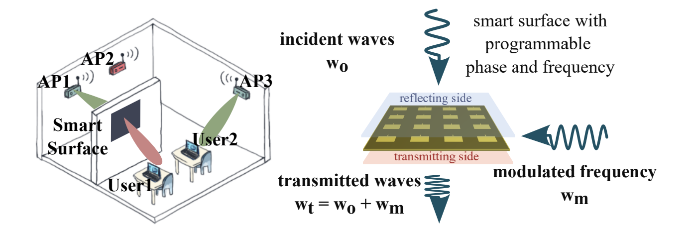

Project RFBridge: Ultra Wideband Reconfigurable Metamaterial Surface Enabling Frequency Conversion

This paper proposes a new capability for RF metasurfaces: highly programmable frequency conversion. We design RFBridge, a low-power metasurface that can simply convert RF signals on one frequency to another, with both of these frequency bands being highly configurable over a wide range -- from 2 GHz to 8 GHz. We design this system as a means to open up varied applications for both wireless communication and sensing. Consider, for example, an RFBridge surface that acts as a frequency-converting relay from a 5 GHz Wi-Fi radio to a legacy 2.4 GHz Wi-Fi radio. Or consider multiple RFBridge surfaces that can collaboratively convert RF signals from a base station to various frequency bands in different rooms to minimize interference. We present a detailed design of RFBridge's frequency tunability and beamforming meta-cells, provide promising results through HFSS simulations, and discuss the exciting new applications opened up by frequency converting metamaterial surfaces.
Citation
- RFBridge: Ultra Wideband Reconfigurable Metamaterial Surface Enabling Frequency Conversion, Yawen Liu, Shivang Aggarwal, Mohamed Ibrahim, Puneet Sharma, and Swarun Kumar, HotMobile 2025 [PAPER]